vase原题 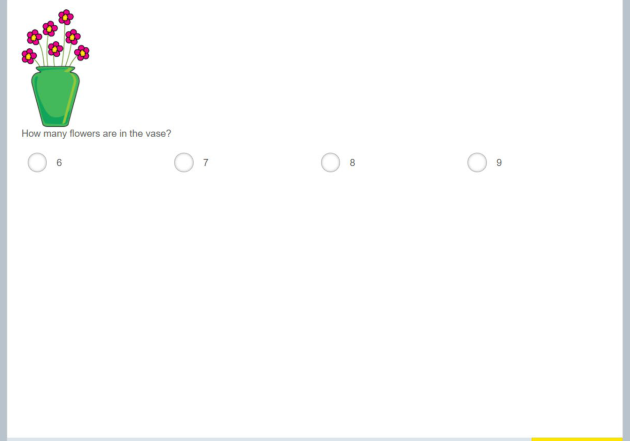 | ① How many flowers are in the vase? ⇒ 11 朵 Count them one by one: there are 11 flowers in the vase. ② 花瓶里一共有多少朵花？ ⇒ 11 朵 一朵一朵指着数：花瓶里一共有 11 朵花。 |
weathercard原题 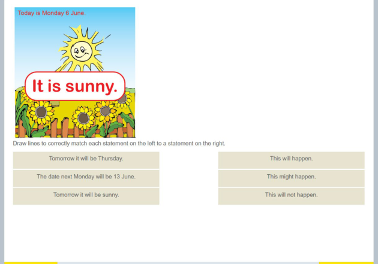 | ① Look at the picture: today is Monday 16 June and it is sunny. Which statement is CERTAIN to happen? ⇒ Next Monday will be 23 June Today is Monday, so tomorrow is Tuesday: "Thursday tomorrow" will NOT happen. Tomorrow's weather only MIGHT be sunny. But Monday 16 June plus 7 days is always 23 June, so that one is certain. ② 看下图：今天是 6 月 12 日，星期一，天气晴朗。下面哪一句说的是「一定」会发生的事？ ⇒ 下星期一将会是 6 月 19 日 今天是星期一，所以明天是星期二，「明天是星期四」一定不会发生。天气明天可能晴也可能不晴，只是「可能」。但今天是 6 月 12 日星期一，再过 7 天（下星期一）一定是 6 月 19 日 —— 这是「一定」。 |
stickrow原题 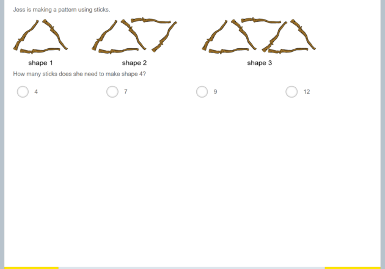 | ① 杰丝用小棒搭图形：图形 1、图形 2、图形 3 的样子如下图。照这个规律，搭图形 5 一共要用多少根小棒？ ⇒ 11 仔细看图：每多搭一个三角形，新三角形都和原来的共用一条边，所以只需要再加 2 根小棒。图形 1 用 3 根、图形 2 用 5 根、图形 3 用 7 根……图形 5 就是 3 + 2×(5−1) = 11 根。 ② 杰丝用小棒搭图形：图形 1、图形 2、图形 3 的样子如下图。照这个规律，搭图形 4 一共要用多少根小棒？ ⇒ 9 仔细看图：每多搭一个三角形，新三角形都和原来的共用一条边，所以只需要再加 2 根小棒。图形 1 用 3 根、图形 2 用 5 根、图形 3 用 7 根……图形 4 就是 3 + 2×(4−1) = 9 根。 |
hexagon原题 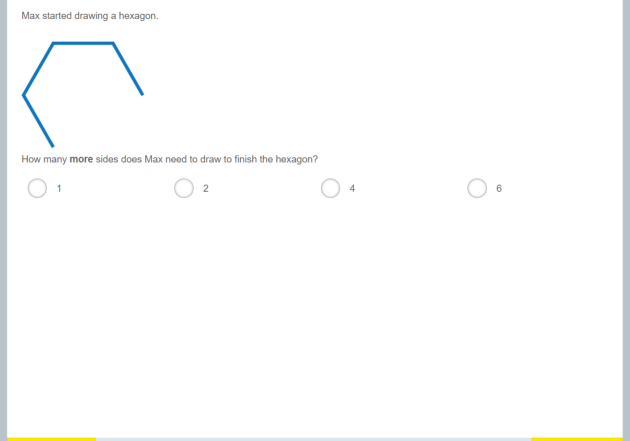 | ① Max was drawing a hexagon and had drawn 5 sides. How many more sides does he need to draw to finish it? ⇒ 1 A hexagon has 6 sides. 5 are drawn, so 1 more are needed. ② Max was drawing a hexagon and had drawn 5 sides. How many more sides does he need to draw to finish it? ⇒ 1 A hexagon has 6 sides. 5 are drawn, so 1 more are needed. |
cardrow原题 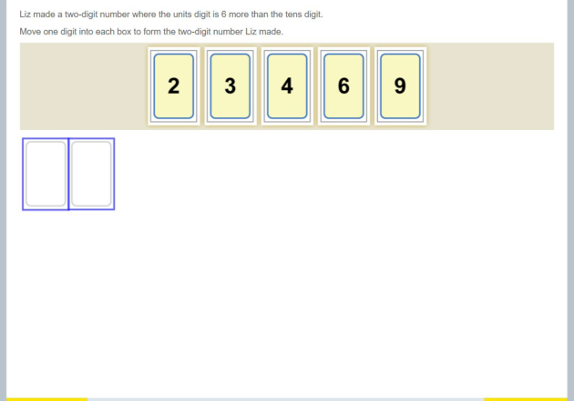 | ① Liz used the digit cards below to make a two-digit number (each card used once). The units digit is 6 more than the tens digit. What number did she make? ⇒ 39 Among the cards 2, 3, 4, 6 and 9, only 3 and 9 differ by 6, so the tens digit is 3 and the units digit is 9: 39. ② 莉兹用下图里的数字卡片摆了一个两位数（每张卡片只能用一次）：个位数字比十位数字大 5。她摆的两位数是多少？ ⇒ 49 从卡片 2、3、4、6、9 里找相差 5 的两张：只有 4 和 9 这一对，所以十位是 4、个位是 9，两位数是 49。 |
house原题 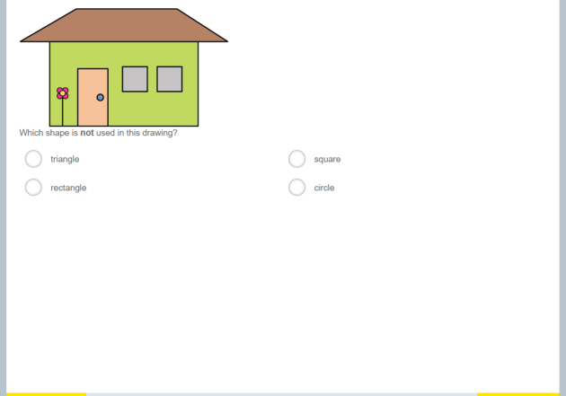 | ① Look at the picture. Which shape was NOT used in the picture? ⇒ square Find every shape you can see in the picture, then compare with the options — the one you cannot find is the answer. ② Look at the picture. Which shape was NOT used in the picture? ⇒ circle Find every shape you can see in the picture, then compare with the options — the one you cannot find is the answer. |
numberline原题 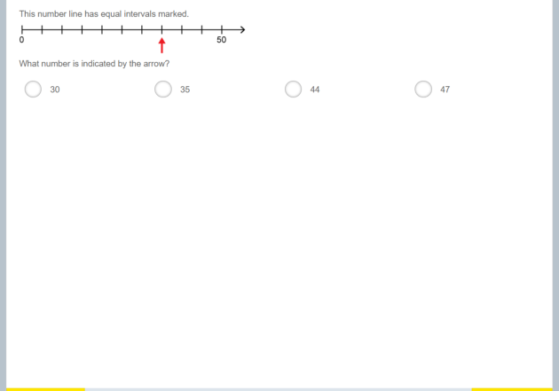 | ① 一条数轴上，0 到 20 之间被平均分成了 10 小格。箭头指在从 0 数起的第 6 格刻度上，这个刻度表示多少？ ⇒ 12 每小格表示 20÷10＝2。第 6 格就是 6×2＝12。 ② 一条数轴上，0 到 20 之间被平均分成了 10 小格。箭头指在从 0 数起的第 2 格刻度上，这个刻度表示多少？ ⇒ 4 每小格表示 20÷10＝2。第 2 格就是 2×2＝4。 |
giftboxes原题 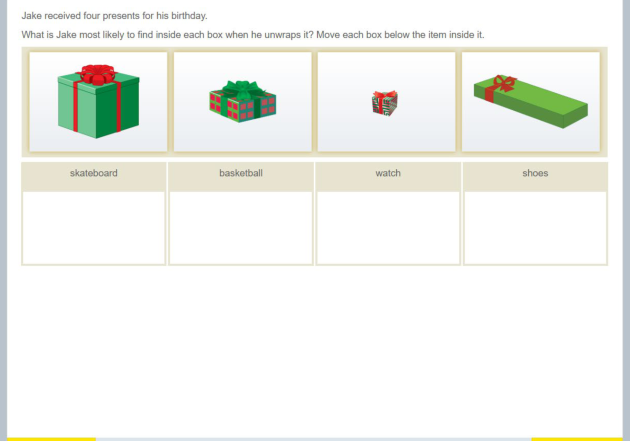 | ① 杰克收到四个礼物盒（如下图）。红色虚线框标出的那个盒子，打开后他最可能找到什么？ ⇒ 手表 看盒子的「大小和形状」：A 盒又大又方正，只有它装得下又大又圆的篮球；D 盒又长又扁，正好放滑板；C 盒最小，只能装手表；B 盒中等、比 A 小、比 C 大，是鞋盒的样子，装鞋子。 ② 杰克收到四个礼物盒（如下图）。红色虚线框标出的那个盒子，打开后他最可能找到什么？ ⇒ 篮球 看盒子的「大小和形状」：A 盒又大又方正，只有它装得下又大又圆的篮球；D 盒又长又扁，正好放滑板；C 盒最小，只能装手表；B 盒中等、比 A 小、比 C 大，是鞋盒的样子，装鞋子。 ② 杰克收到四个礼物盒（如下图）。红色虚线框标出的那个盒子，打开后他最可能找到什么？ ⇒ 手表 看盒子的「大小和形状」：A 盒又大又方正，只有它装得下又大又圆的篮球；D 盒又长又扁，正好放滑板；C 盒最小，只能装手表；B 盒中等、比 A 小、比 C 大，是鞋盒的样子，装鞋子。 ② 杰克收到四个礼物盒（如下图）。红色虚线框标出的那个盒子，打开后他最可能找到什么？ ⇒ 鞋子 看盒子的「大小和形状」：A 盒又大又方正，只有它装得下又大又圆的篮球；D 盒又长又扁，正好放滑板；C 盒最小，只能装手表；B 盒中等、比 A 小、比 C 大，是鞋盒的样子，装鞋子。 |
pictograph原题 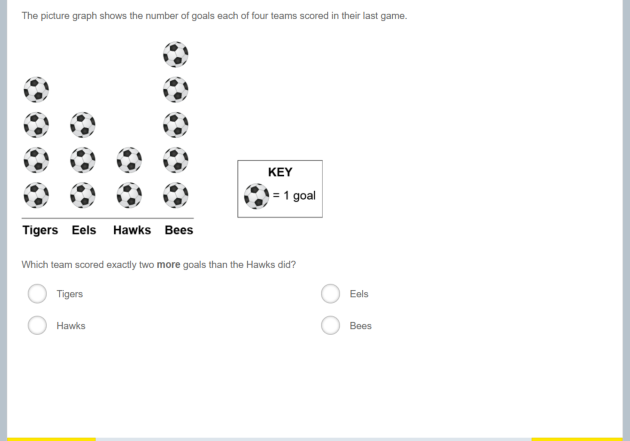 | ① The pictograph below shows the goals four teams scored in their last game (each ball = 1 goal). Which team scored exactly 2 more goals than the Hawks? ⇒ Tigers Read the Hawks from the graph: 1 goals. Two more than 1 is 3; find the column with 3 balls in the graph. ② The pictograph below shows the goals four teams scored in their last game (each ball = 1 goal). Which team scored exactly 2 more goals than the Hawks? ⇒ Eels Read the Hawks from the graph: 5 goals. Two more than 5 is 7; find the column with 7 balls in the graph. |
symeq原题 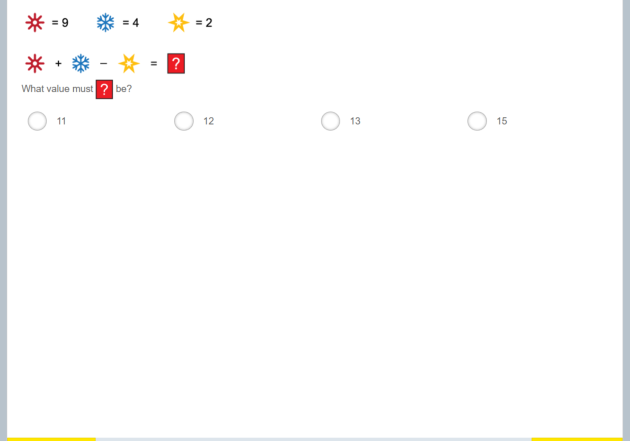 | ① Look at the equations below (each shape stands for a number). What is ◆ + ✿ − ❁ ? ⇒ 8 From the picture ◆＝6, ✿＝4, ❁＝2, so 6+4−2＝8. ② 看下图的算式（每个图形代表一个数）。◆ ＋ ✿ − ❁ 等于多少？ ⇒ 8 从图上读出 ◆＝5、✿＝5、❁＝2，代入算式：5＋5−2＝8。 |
cardrow原题 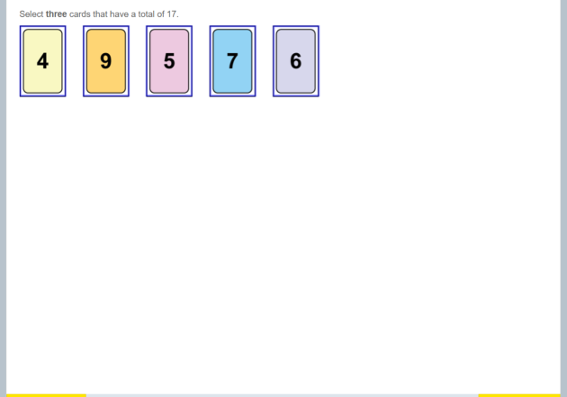 | ① 从下图五张卡片中选出「三张」，使三张卡片上的数加起来正好是 11。（点选三张卡片） ⇒ 2、1、8 把三张卡片相加试试：2＋1＋8＝11，正好符合，所以选这三张。 ② 从下图五张卡片中选出「三张」，使三张卡片上的数加起来正好是 10。（点选三张卡片） ⇒ 1、4、5 把三张卡片相加试试：4＋1＋5＝10，正好符合，所以选这三张。 |
clocks原题 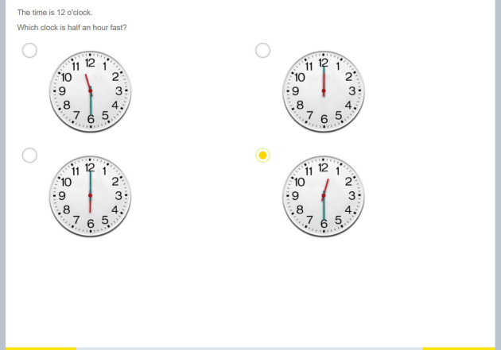 | ① 现在是 10 点整。哪个钟显示的时间比现在「快半小时」？ ⇒ 右下的钟 「快半小时」就是多走半小时：10 点再过半小时是 10:30。找出指针正好指向 10:30 的那个钟。 ② It is now 10 o'clock. Which clock shows a time that is half an hour LATER than now? ⇒ bottom-left clock Half an hour later than 10:00 is 10:30. Find the clock whose hands show 10:30. |
building原题 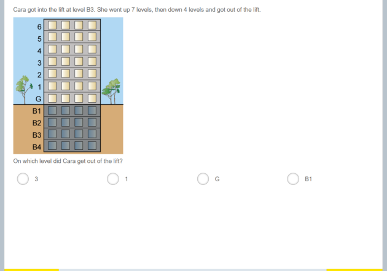 | ① Cara got into the lift at level B2 of the building below. She went up 8 levels, then down 2 levels, and got out. What floor ABOVE ground did she get out at? (G is the ground floor; floors above count from 1.) ⇒ 4 楼 Treat B2 as −2: −2+8−2＝4. A positive answer means above ground, so she got out at floor 4. ② Cara got into the lift at level B1 of the building below. She went up 6 levels, then down 1 levels, and got out. What floor ABOVE ground did she get out at? (G is the ground floor; floors above count from 1.) ⇒ 4 楼 Treat B1 as −1: −1+6−1＝4. A positive answer means above ground, so she got out at floor 4. |
building原题 | ① 卡拉从下图这栋楼的 B3 层进了电梯。电梯上升了 5 层，又下降了 6 层，然后她出了电梯。她是在地下哪一层出的电梯？（B1 是地下 1 层） ⇒ B4 把 B3 层当成 −3：−3＋5−6＝-4。结果是负数，说明仍在地下，就是 B4 层。 ② Cara got into the lift at level B1 of the building below. She went up 5 levels, then down 5 levels, and got out. What level BELOW ground did she get out at? (B1 is one level below ground.) ⇒ B1 Treat B1 as −1: −1+5−5＝-1. Negative means below ground, i.e. level B1. |
tallychart原题 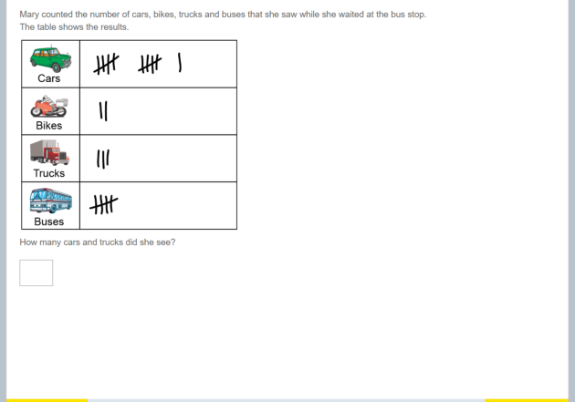 | ① The tally chart below shows the vehicles Mary counted at the bus stop (tally marks in groups of 5). How many cars and trucks did she see altogether? ⇒ 18 辆 Count the tallies: 12 cars and 6 trucks, so 12+6＝18. ② The tally chart below shows the vehicles Mary counted at the bus stop (tally marks in groups of 5). How many cars and trucks did she see altogether? ⇒ 11 辆 Count the tallies: 3 cars and 8 trucks, so 3+8＝11. |
bookshelf原题 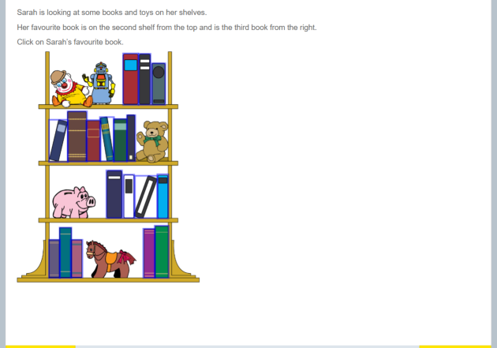 | ① Look at the bookshelf. What colour is the book on shelf 3 counted from the top and position 3 counted from the right? ⇒ red Count the shelves from the top down to number 3, then count 3 books from the right. Read that book's colour. ② Look at the bookshelf. What colour is the book on shelf 1 counted from the top and position 5 counted from the right? ⇒ red Count the shelves from the top down to number 1, then count 5 books from the right. Read that book's colour. |
stick原题 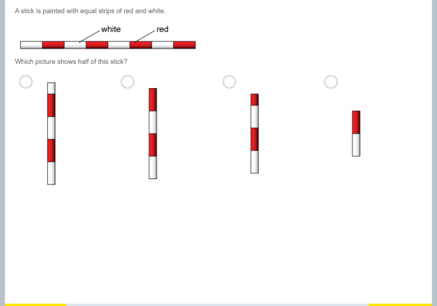 | ① A stick is divided into 6 equal segments, coloured red and white (see the diagram below). What is half of the stick in segments? ⇒ 3 段 Half means split the 6 segments into two equal parts: 6÷2＝3 segments. ② 一根小棍被平均分成了 10 小段，涂成红白相间（如下图）。这根小棍的一半是多少小段？ ⇒ 5 段 一半就是把 10 段平均分成两份：10÷2＝5 段。 |
standcircle原题 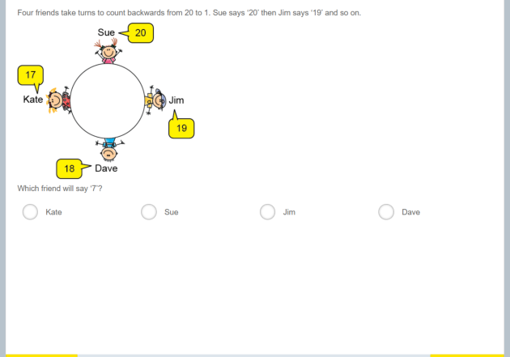 | ① 四个小伙伴围成一圈轮流往下倒数，数数的顺序和头几个数如下图。照这样数下去，「11」会轮到谁说？ ⇒ 乙 从图上看，甲、乙、丙、丁依次报一个数，四个人轮一圈。从 20 数到 11 一共报了 20−11＝9 个数，9÷4 的余数是 1，所以是第 2 个人报的，也就是答案。 ② 四个小伙伴围成一圈轮流往下倒数，数数的顺序和头几个数如下图。照这样数下去，「23」会轮到谁说？ ⇒ 乙 从图上看，甲、乙、丙、丁依次报一个数，四个人轮一圈。从 24 数到 23 一共报了 24−23＝1 个数，1÷4 的余数是 1，所以是第 2 个人报的，也就是答案。 |
squareposts原题 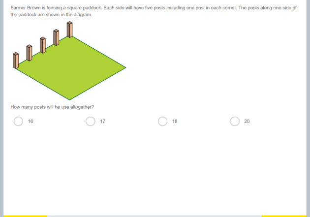 | ① A farmer wants a square paddock. He puts 4 posts on each side, with one post at each corner (corner posts are shared by two sides). How many posts does he need in total? ⇒ 12 根 Simply 4×4＝16 would count each corner post twice, so subtract 4. Total = 4×4−4＝12 posts. ② A farmer wants a square paddock. He puts 7 posts on each side, with one post at each corner (corner posts are shared by two sides). How many posts does he need in total? ⇒ 24 根 Simply 4×7＝28 would count each corner post twice, so subtract 4. Total = 4×7−4＝24 posts. |
lanterns原题 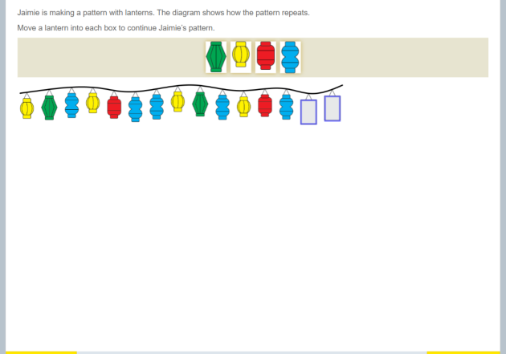 | ① Jamie hangs lanterns in the repeating order red, yellow, blue, green. What colour is the 13th lantern? ⇒ red 4 lanterns make one group. 13÷4＝3.25 groups with remainder 1; remainder 1 is the first in each group — red. ② 杰米挂灯笼，按「红、黄、蓝、绿」的顺序不断重复。第 25 个灯笼是什么颜色？ ⇒ 红色 4 个灯笼为一组。25÷4＝6.25 组余 1，余 1 就是每组里的第 1 个——红色。 |
seasonwheel原题 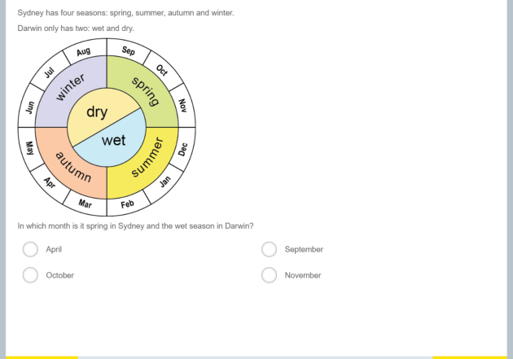 | ① 圆盘上是悉尼的四季。悉尼 5 月是什么季节？ ⇒ 秋天 悉尼的四季：春天 9–11 月，夏天 12–2 月，秋天 3–5 月，冬天 6–8 月。5 月就属于对应的那个季节。 ② The wheel shows the seasons in Sydney. Which season is it in Sydney in month 11? ⇒ spring In Sydney: spring is Sep–Nov, summer Dec–Feb, autumn Mar–May, winter Jun–Aug. Month 11 belongs to the matching season. |
coins原题 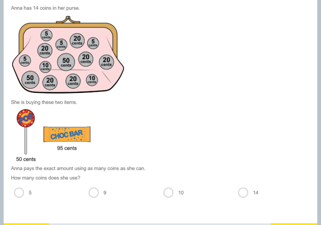 | ① Anna has plenty of 5c, 10c, 20c and 50c coins (diagram below). She must pay exactly 80c and wants to use AS MANY coins as possible. What is the greatest number of coins she can use? ⇒ 16 To use the most coins, use the smallest value (5c) as much as possible: 80 ÷ 5 = 16 coins. ② 安娜的钱包里有很多 5 分、10 分、20 分、50 分的硬币（如下图）。她要正好付 135 分，并且想「用尽可能多的硬币」。她最多要用多少枚硬币？ ⇒ 27 想用的硬币最多，就要尽量用最小面值的 5 分硬币：135 ÷ 5 = 27（枚），而且 135 正好是 5 的倍数，所以最多 27 枚。 |
tiling + optionsSvg原题 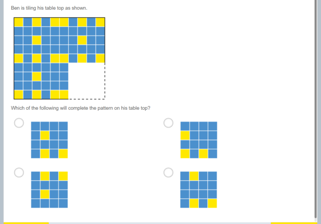 | ① Ben's table top is tiled in a blue/yellow checker pattern (diagram below); a 2×2 patch is missing inside the red dashed box. What should the missing patch look like? ⇒ A 4 个图形选项（正确项是 C） A B C D Line the patch up with the rows and columns: the pattern alternates both ways, and the gap starts at row 1, column 3, so the four colours are fixed. ② Ben's table top is tiled in a blue/yellow checker pattern (diagram below); a 2×2 patch is missing inside the red dashed box. What should the missing patch look like? ⇒ A 4 个图形选项（正确项是 B） A B C D Line the patch up with the rows and columns: the pattern alternates both ways, and the gap starts at row 4, column 1, so the four colours are fixed. |
papers原题 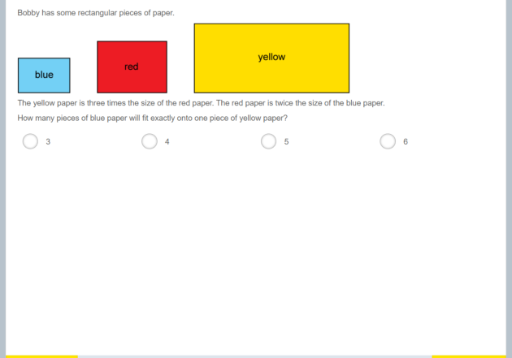 | ① Bobby has three rectangular sheets, drawn to scale below (same width, different lengths). The yellow sheet is 5 times the size of the red sheet, and the red sheet is 3 times the size of the blue sheet. How many blue sheets exactly cover one yellow sheet? ⇒ 15 张 Red is 3 times blue and yellow is 5 times red, so yellow is 3×5＝15 times blue: 15 blue sheets cover one yellow sheet. ② 鲍比有三张长方形纸，下图按实际大小画出了它们（同样宽，长度不同）。黄纸的大小是红纸的 4 倍，红纸是蓝纸的 4 倍。一张黄纸能正好铺满多少张蓝纸？ ⇒ 16 张 红纸是蓝纸的 4 倍，黄纸又是红纸的 4 倍，所以黄纸是蓝纸的 4×4＝16 倍 —— 要 16 张蓝纸才能正好铺满一张黄纸。 |
board + optionsSvg原题 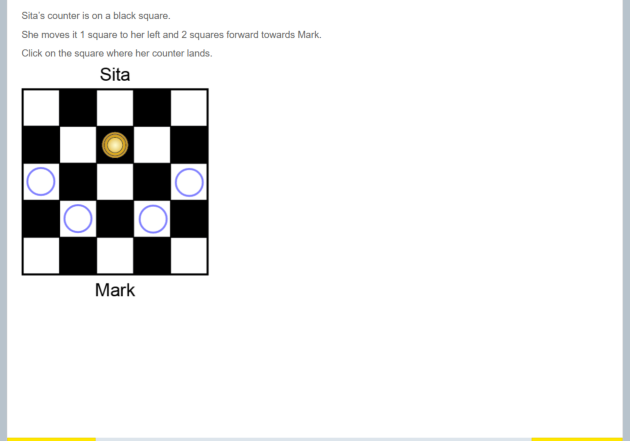 | ① Sita's counter (blue dot) is on a black-and-white board and Mark stands below the board (diagram below). She moves it 1 square left and then 2 squares forward toward Mark. On which square does it land? ⇒ A 4 个图形选项（正确项是 D） A B C D From the counter, 1 left then 2 toward Mark (downwards) lands on row 5, column 1 (counting from the top-left). ② Sita's counter (blue dot) is on a black-and-white board and Mark stands below the board (diagram below). She moves it 1 square left and then 2 squares forward toward Mark. On which square does it land? ⇒ A 4 个图形选项（正确项是 C） A B C D From the counter, 1 left then 2 toward Mark (downwards) lands on row 5, column 3 (counting from the top-left). |
datatable原题 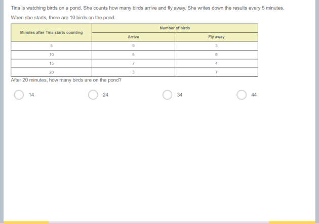 | ① 池塘里原有 13 只鸟。蒂娜每隔 5 分钟记录一次飞来的和飞走的鸟数（见下表）。20 分钟后池塘里有多少只鸟？ ⇒ 13 只 把表里的每次变化依次算下来：13＋7−6＝14；14＋9−6＝17；再 6 进 7 出得 16；最后 5 进 8 出，得 13 只。 ② 池塘里原有 12 只鸟。蒂娜每隔 5 分钟记录一次飞来的和飞走的鸟数（见下表）。20 分钟后池塘里有多少只鸟？ ⇒ 14 只 把表里的每次变化依次算下来：12＋4−6＝10；10＋6−7＝9；再 8 进 3 出得 14；最后 6 进 6 出，得 14 只。 |
blockstack原题 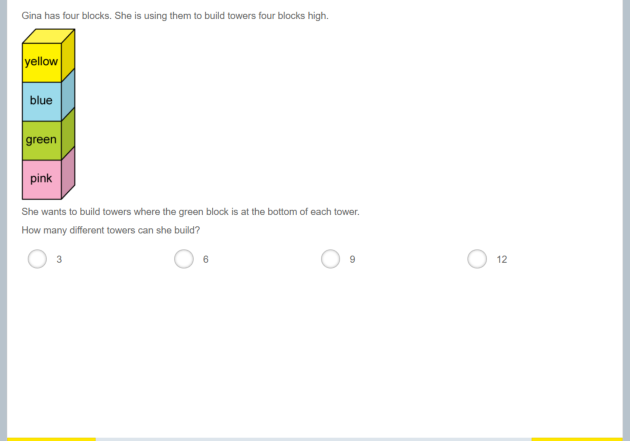 | ① 吉娜有 5 块颜色不同的积木（见下图，每块颜色都不一样）。她想搭一座 5 层的高塔，其中绿积木必须在最底层。她能搭出多少座不一样的塔？ ⇒ 24 座 绿积木已经固定在最底层，剩下 4 个位置要把 4 种颜色的积木排进去：第一个位置有 4 种选法，第二个有 3 种，第三个有 2 种，所以一共 4×3×2＝24 座。 ② 吉娜有 5 块颜色不同的积木（见下图，每块颜色都不一样）。她想搭一座 5 层的高塔，其中绿积木必须在最底层。她能搭出多少座不一样的塔？ ⇒ 24 座 绿积木已经固定在最底层，剩下 4 个位置要把 4 种颜色的积木排进去：第一个位置有 4 种选法，第二个有 3 种，第三个有 2 种，所以一共 4×3×2＝24 座。 |
symeq原题 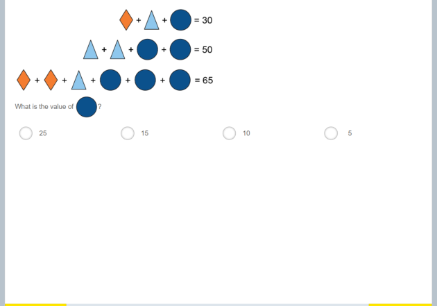 | ① 看下图的三道算式（◆、▲、● 各代表一个数）。● 代表的数是多少？ ⇒ 10 第二式：▲＋▲＋●＋●＝48，所以 ▲＋●＝24。
第一式：◆＋▲＋●＝30，把 ▲＋● 换成 24，得 ◆＝30−24＝6。
第三式：◆＋◆＋▲＋●＋●＋●＝56 可以拆成 (◆＋▲＋●)＋◆＋●＋●＝56。把 ◆＋▲＋●＝30、◆＝6 代进去：30＋6＋●＋●＝56，所以 ●＋●＝20，●＝10。 ② 看下图的三道算式（◆、▲、● 各代表一个数）。● 代表的数是多少？ ⇒ 5 第二式：▲＋▲＋●＋●＝32，所以 ▲＋●＝16。
第一式：◆＋▲＋●＝29，把 ▲＋● 换成 16，得 ◆＝29−16＝13。
第三式：◆＋◆＋▲＋●＋●＋●＝52 可以拆成 (◆＋▲＋●)＋◆＋●＋●＝52。把 ◆＋▲＋●＝29、◆＝13 代进去：29＋13＋●＋●＝52，所以 ●＋●＝10，●＝5。 |
pens原题 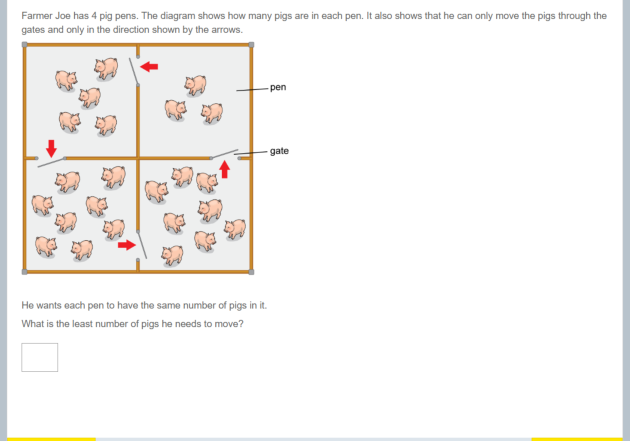 | ① 农夫乔有 A、B、C、D 四个猪圈（如下图），猪只能按箭头方向从一个圈赶到相邻的下一个圈。他想让每个猪圈的猪一样多，最少要移动多少头猪？ ⇒ 6 头 四个圈一共 12 头猪，平均每个圈 3 头。只能按 A→B→C→D 的方向赶：A 多 1 头只能给 B；B 接着多 4 头给 C；C 再多 1 头给 D。一共要移动 6 头。 ② Farmer Joe has four pens A, B, C and D (diagram below); pigs may only be moved in the direction of the arrows into the next pen. He wants every pen to hold the same number of pigs. What is the fewest pigs he must move? ⇒ 3 头 There are 12 pigs in all, so 3 per pen. Pigs only move A→B→C→D: A passes 2 on, B passes 1, C passes 0. Total moved: 3. |
配图模板 29 个